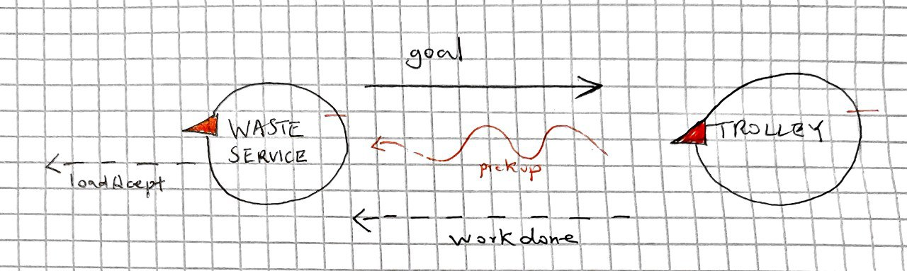
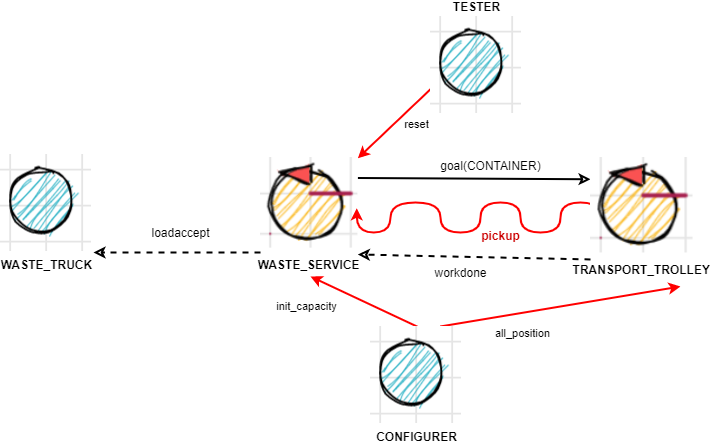

Introduction
Tema finale corso di studio Ingegneria dei sistemi software, Laurea Magistrale Università di Bologna
PRECEDENTI
CHECKPOINT : REQUISITI
Modello dei requisiti
- modello_requisiti
- path : CoreWasteService/src/modello_requisiti.qakt
-

Per eseguire il modello, rinominare il file in modello_requisiti.qak, eliminare le sorgenti generate e rigenerare il sistema
core-functionality - Punti aperti
When the load is accepted , the transport trolley reaches the INDOOR, picks up the material , goes to the proper container and settles the material.
During this activity, the WasteService blinks the Led- Problema: innesco procedura proattiva di Transport_trolley
(denominato in seguito issue_trolley) - Problema: comunicazione da parte del Transport_trolley della fine del prelievo dei materiali, il truck solo dopo il prelievo libera INDOOR ( Q2 )
(denominato in seguito pickup) When the deposit action is terminated , the transport trolley excutes another deposit command (if any) or returns to its HOME.
- Problema: comunicazione da parte del Transport_trolley della terminazione del lavoro assegnato
(denominato in seguito work_complete) - Problema: al Transport_trolley devono arrivare informazioni riguardanti l'incarico successivo
(denominato in seguito next_work)
alarm : non considerato
statusGUI : non considerato
Problem Analysis
issue_trolley
La direzione della comunicazione è sicuramente DA Waste_Service VERSO Transport_trolley, Da requisiti R1 R2 Waste_Service ha l'informazione di quando un Waste_Truck invia una richiesta, questo verso garantisce una comunicazione by-need in modello push.
proposta #1: evento
- PRO
- disaccoppiamento totale, Waste_Service non è a conoscenza dell'esistenza del Transport_trolley
- CONTRO
- non è reliable , ogni incarico inviato dal Waste_Service dovrebbe venir gestito dal trolley
- per questo particolare problema tramite Q1 Q2, individuo che il Transport_trolley deve essere sensibile all'evento per tutto il percorso a parte il tratto da HOME ad INDOOR
- Una possibile soluzione per forzare reliability potrebbe essere:
inviare (dopo un timeout) una request al trolley per vedere se effettivamente sta effettuando l'incarico, ma in questo caso perdiamo il vantaggio del disacoppiamento totale. (Waste_Service deve conoscere Transport_trolley)
proposta #2: dispaccio
- PRO
- La connessione è reliable, se il trolley non riceve l'incarico, l'infrastruttura genera una eccezione esplicita.
- Necessito comunque di un unico messaggio per questo problema.
- CONTRO
- Il Waste_Service deve essere a conoscenza del Transport_trolley.
proposta #3: request-response
- PRO
- La connessione è reliable, se il trolley non riceve l'incarico, l'infrastruttura genera una eccezione esplicita.
- CONTRO
- Necessito di due messaggi (request response) per soddisfare questo problema, inoltre non è chiara la semantica della risposta
- La semantica della risposta più straight-forward è che risponde subito così il Waste_Service sa che ha ricevuto il messaggio
informazione posizione containers
Sorge il dilemma di quale entità (Waste_Service o Transport_trolley) deve essere a conoscenza dell'associazione NOME_CONTAINER ==> POSIZIONE NELLO SPAZIO
- Se questa informazione la possiede Waste_Service:
il payload del messaggio di issue_trolley sono le coordinate (oppure coppia di coordinate di vertici opposti se delimito un'area rettangolare) del container destinazione - Se questa informazione la possiede Transport_trolley:
il payload é semplicemente il nome del container destinazione
pickup
La direzione della comunicazione è Da Transport_trolley VERSO Waste_Service e Waste_Truck
Notiamo subito che la comunicazione tra Transport_trolley verso il Waste_Truck deve essere intermediata da Waste_Service per non avere un ulteriore accoppiamento
Trolley to Waste_Service
proposta #1: evento
- PRO
- disaccoppiamento, il Transport_trolley non conosce il Waste_Service.
Se possibile vorrei mantenere il Transport_trolley indipendente dal resto del sistema - CONTRO
- unreliability
ma è fatale che il Waste_Truck liberi INDOOR esattamente quando il Transport_trolley preleva il materiale? potrebbe liberare in un secondo momento?
proposta #2: dispaccio
- PRO
- reliable
- CONTRO
- dipendenza dal Transport_trolley verso Waste_Service
proposta #3: request-response standard
È solo una complicazione del dispaccio, stesse considerazioni ma un CONTRO in più
- CONTRO
- due messagggi per questo problema
proposta #4: request-response, sfruttando proposta #3 di issue_trolley
La semantica del messaggio di risposta della richiesta goal per issue_trolley è aperta a rivalutazioni; possiamo pensare che il Transport_trolley risponde al termine del prelievo, e WasteService agisce di conseguenza notificando Waste_Truck
- PRO
- sfrutto un messaggio esistente
- connessione reliable
- Transport_trolley non ha bisogno di conoscere il Waste_Service, gli basta rispondere al messaggio (goal) arrivato
- CONTRO
applicabile solo quando scelgo proposta #3 di issue_trolley
Waste_Service to Waste_Truck
proposta #1: dispaccio
proposta #2: request-response, sfruttando R2 loadaccept
Il ragionamento è uguale per il confronto di proposta #2 e proposta #4 di
work_complete
La direzione della comunicazione è Da Transport_trolley VERSO Waste_Service.
Le possibili proposte di soluzione e le corrispettive considerazioni sono uguali al problema pickup, con la seguente piccola modifica
proposta #4: request-response, sfruttando proposta #3 di issue_trolley
La semantica del messaggio di risposta della richiesta goal per issue_trolley è aperta a rivalutazioni; possiamo pensare che il Transport_trolley risponde al termine del percorso , e WasteService agisce di conseguenza.
Ovviamente la proposta #4 pickup e la proposta #4 work_complete sono in conflitto , non è possibile attribuire due semantiche allo stesso messaggio di risposta.
Se come requisito di correttezza non è richiesto che Waste_Truck debba liberare INDOOR esattamente nell'istante in cui vengono prelevati i materiali; si può pensare di utilizzare la semantica ad evento per pickup, la semantica response per work_complete (che implicherebbe la semantica request per issue_trolley); work_complete nel caso in cui non sia arrivato l'evento pickup, all'arrivo di work_complete viene inviato loadaccept
next_work
Non riesco a stabilire a priori un verso di comunicazione, entrambi i versi possono avere senso (by need e non polling), ma preferisco in caso di accoppiamento di mantenere quelli presenti, quindi DA Waste_Service VERSO Transport_trolley.
Per la domanda Q1, so per dominio che mi possono arrivare altre richieste da nuovi Waste_Truck solo dopo che il trolley ha prelevato il carico
Waste_Service to Trolley
Waste_Service invia senza sapere a che stato si trova il Trolley
La scelta della soluzione per questo problema deve essere coerente con issue_trolley, le due soluzioni devono avere lo stesso tipo di messaggi.
proposta #1: dispaccio
proposta #2: request-response
proposta #3: evento
se un attore non è in attesa del evento, questo viene perso (non entra nella coda dei messaggi in attesa)
produttore-consumatore?
Waste_Service può accodare il nuovo incarico al Transport_trolley? Oppure deve inviarglielo solo quando il trolley sta in effettiva attesa di un nuovo incarico?
Trolley to Waste_Service
Aggiungo una dipendenza in più tra i componenti, non valuto questa opzione.
Modello del problema
Il modello dei requisiti ci impone una dipendenza tra Waste_Truck e Waste_Service (I Waste_Truck devono conoscere Waste_Service)
Il problema issue_trolley ci suggerisce che ci può essere una dipendenza da Waste_Service verso Transport_trolley
Vogliamo di conseguenza provare ad rendere il Transport_trolley indipendente dagli altri componenti
Il seguente modello di problema mostra l'architettura logica completa per i requisiti core-functionality
| PROBLEMA | soluzione adottata |
|---|---|
| issue_trolley | request-response |
| informazione posizione containers | il payload é il nome del container |
| pickup : Trolley to Waste_Service | evento |
| pickup : Waste_Service to Waste_Truck | request-response, sfruttando R2 loadaccept |
| work_complete | request-response, sfruttando proposta response di issue_trolley |
| next_work : Waste_Service to Trolley | stesso di issue_trolley |
| next_work: produttore-consumatore | nuove richieste sono messe in coda al Transport_trolley |
- modello_problema
- path : CoreWasteService/src/modello_problema.qakt
- 
conoscenza
Assieme a
Una prima divisione può essere sulla possibilità di modifica di questi dati durante la vita del sistema, quindi
Statici
- Capacità iniziale contenitori
- Coppia (Nome,Coordinate) per ognuno dei luoghi interessanti (HOME,INDOOR,CONTAINER_GLASS, )
- Stato e posizione iniziale del trolley
Dinamici, modificabili durante l'esecuzione
- capacità corrente dei contenitori
- posizione attuale del trolley
- stato del trolley
Notiamo che le conoscenze dinamiche sono anche quelli da requisiti che identifichiamo come Informazioni Osservabili del sistema; questo ci suggerisce che devono essere mantenute all'interno degli Attori, per la corrispondenza tra Attori e COAP_Resource
Waste_Service si terrà carico della capacità corrente dei contenitori, essendo l'ente accede a questa informazione e che lo aggiorna
stessa motivazione avremmo Transport_trolley che si terrà carico di posizione attuale del trolley e stato del trolley
Le informazioni statiche mi identficano una particolare istanza del problema da risolvere, una base di conoscenza condivisa da tutti i contesti, dove i componenti del sistema gli possono fare richieste tipo "get" per ottenere informazioni necessarie, in questo modo c'è dipendenza dai attori di tutti i contesti verso il "configuratore", detenitore di tutte le informazioni statiche
Oppure è il "configuratore" che controlla la presenza dei vari componenti, ed invia a loro le informazioni necessarie; i vari componenti non partono senza ottenere le configurazioni giuste, oppure partono con una informazione di default, in questo modo i singoli componenti sono vincolati al massimo da un messaggio in ingresso.
Modello del problema rivisitato
- modello_problema_conoscenza
- path : CoreWasteService/src/modello_problema_conoscenza.qakt
- 
Test plans
core-functionality
testing requisiti
testLoadAccept : Un Truck si presenta con un carico di TruckLoad superiore allo spazio disponibile, Waste_Service deve rispondere con loadrejected
testLoadReject : Un Truck si presenta con un carico di TruckLoad inferiore o uguale allo spazio disponibile, Waste_Service deve aggiornare correttamente lo spazio residuo, e rispondere con loadaccept
- TestCoreRequisiti
- path : CoreWasteService/test/qak/TestCoreRequisiti.java
testing problemi
testSingleLoadAccepted : Waste_Service non accetta nessun altro incarico nel mentre che Transport_trolley sta eseguendo l'incarico corrente, al termine il Transport_trolley si dirige in HOME e rimane in attesa una volta arrivato
testConsecutiveLoadAccepted : Waste_Service accetta un incarico prima che Transport_trolley termina l'incarico corrente; quando Transport_trolley termina l'incarico corrente, deve dirigersi ad INDOOR, senza passare da HOME
- TestCoreProblema
- path : CoreWasteService/test/qak/TestCoreProblema.java
componente tester
Per agevolare i test, Waste_Service è sensibile ad un dispaccio reset che riporta i valori del pesi disponibili a quelli iniziali, questo messaggio non deve essere reso sensibile a deploy time
- modello_problema_conoscenza.qakt
- path : CoreWasteService/src/modello_problema_conoscenza.qakt
Esecuzione automatica dei test
In caso si rigenerassero i sorgenti con l'interprete qak, aggiungere
alla Classe : src/it/unibo/transporttrolley/Transporttrolley.kt
il seguente import : import java.util.*
Dato che viene utilizzato java.util.StringJoiner
Avvalendosi del framework gradle, posso eseguire tutti i test tramite riga di comando
gradle test
Ottendendo report e risultati del test in:
build/reports/tests/test/index.html
build/test-results/test
CHECKPOINT : PROBLEMA
Modello del problema
- modello_problema_conoscenza
- path : CoreWasteService/src/modello_problema_conoscenza.qakt
| PROBLEMA | soluzione adottata |
|---|---|
| issue_trolley | request-response |
| informazione posizione containers | il payload é il nome del container |
| pickup : Trolley to Waste_Service | evento |
| pickup : Waste_Service to Waste_Truck | request-response, sfruttando R2 loadaccept |
| work_complete | request-response, sfruttando proposta response di issue_trolley |
| next_work : Waste_Service to Trolley | stesso di issue_trolley |
| next_work: produttore-consumatore | nuove richieste sono messe in coda al Transport_trolley |
Esecuzione automatica dei test
In caso si rigenerassero i sorgenti con l'interprete qak, aggiungere alla Classe : CoreWasteService/src/it/unibo/transporttrolley/Transporttrolley.kt il seguente import :
import java.util.*
Comandi
Build: gradle build -x test
Testing: gradle test
Risultati test
ls build/reports/tests/test/
ls build/test-results/test/
github: